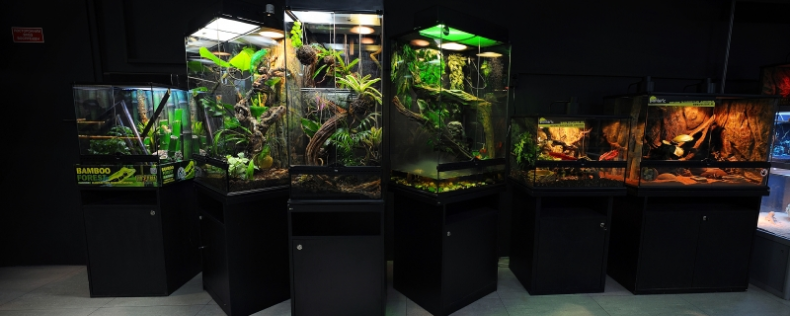
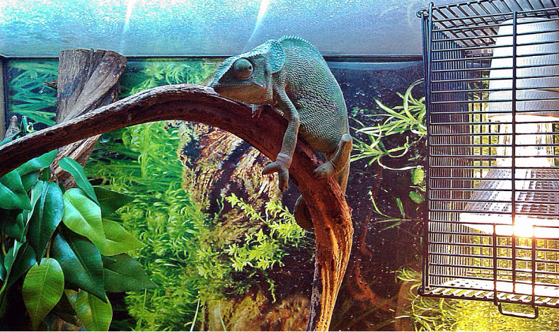
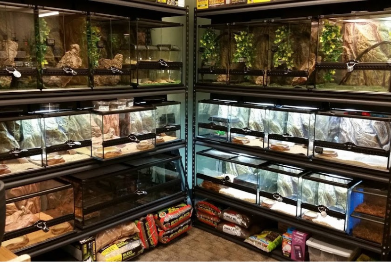

О нас
На нашем сайте представлен обширный ассортимент животных, террариумов, оборудования, декора и кормов. Мы предоставляем полный спектр услуг, включая оформление террариумов, обслуживание, онлайн консультирование и многое другое. В нашем магазине вы всегда сможете собрать полный комплект для содержания питомца. А если вы новичок, наши сотрудники с радостью помогут выбрать первое животное и обустроить идеальный террариум.
Что вы получаете, работая с нами
Наш основной магазин находится в шаговой доступности от станции метро Семеновская и представляет собой изумительный шоу-рум. Сотрудники зоомагазина ежедневно проводят информативные экскурсии и предлагают посетителям познакомиться с экзотическими животными не только через стекло террариумов, но и прикоснуться к ним вживую. Каждый желающий имеет уникальную возможность приобрести необычное животное и все необходимое для его содержания. Кроме того, мы предоставляем гарантию на животных, приобретенных у нас, клубную карту с множеством привилегий, отель для животных и другие услуги.
Наш основной магазин находится в шаговой доступности от станции метро Семеновская и представляет собой изумительный шоу-рум. Сотрудники зоомагазина ежедневно проводят информативные экскурсии и предлагают посетителям познакомиться с экзотическими животными не только через стекло террариумов, но и прикоснуться к ним вживую. Каждый желающий имеет уникальную возможность приобрести необычное животное и все необходимое для его содержания. Кроме того, мы предоставляем гарантию на животных, приобретенных у нас, клубную карту с множеством привилегий, отель для животных и другие услуги.
Наш основной магазин находится в шаговой доступности от станции метро Семеновская и представляет собой изумительный шоу-рум. Сотрудники зоомагазина ежедневно проводят информативные экскурсии и предлагают посетителям познакомиться с экзотическими животными не только через стекло террариумов, но и прикоснуться к ним вживую. Каждый желающий имеет уникальную возможность приобрести необычное животное и все необходимое для его содержания. Кроме того, мы предоставляем гарантию на животных, приобретенных у нас, клубную карту с множеством привилегий, отель для животных и другие услуги.
- 
- 


- 